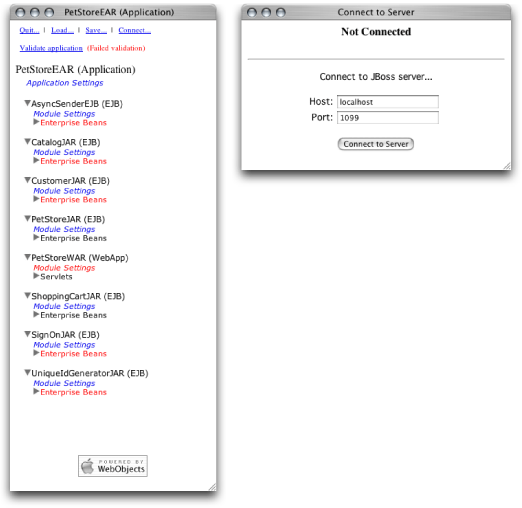
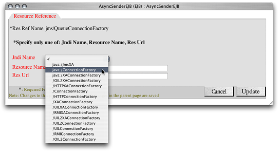
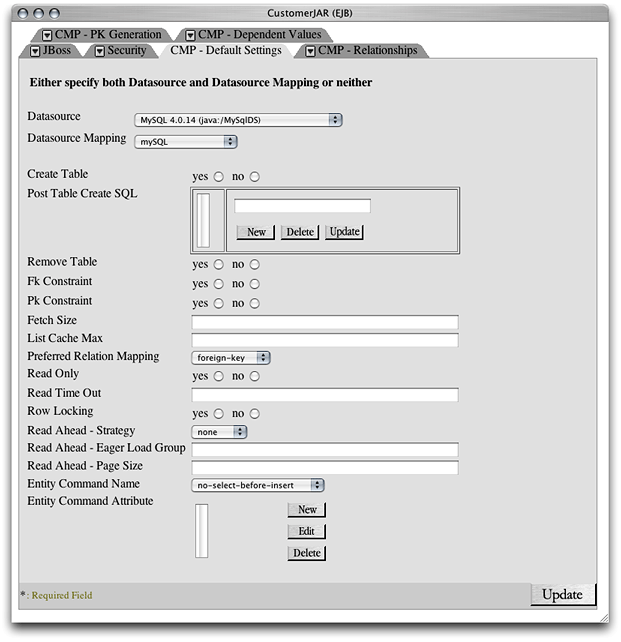
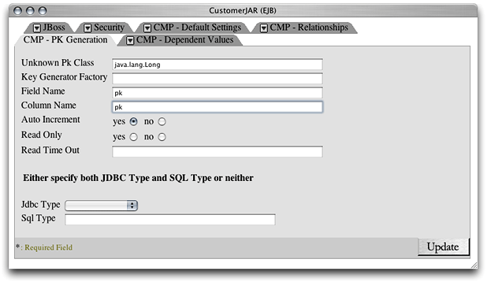

Configuring and Deploying Sun’s Pet Store
Pet Store is a sample J2EE application from Sun Microsystems. Pet Store showcases the power and flexibility of the J2EE platform. This chapter provides a tutorial on the configuration of Sun’s Pet Store for deployment in Mac OS X Server.
Sun’s Pet Store is comprised of several applications. This tutorial uses the Pet Store enterprise application and the Supplier enterprise application.
In this tutorial you obtain the Pet Store files from Sun, prepare your Mac OS X Server system for a Pet Store deployment, and configure the Pet Store and Supplier applications for deployment on JBoss.
Note: The companion files of this document include configured Pet Store archives that are ready for deployment using MySQL as the database engine. They’re at Application_Server_companion/Configured_Pet_Store_archives. You need to perform only the steps listed in “Set Up the Environment” and “Deploy and Test the Application.”
See http://developer.java.sun.com/developer/releases/petstore for more information on Sun’s Pet Store application.
In this section:
Set Up the Environment
Configure the Pet Store Enterprise Application
Configure the Supplier Enterprise Application
Deploy and Test the Application
Set Up the Environment
Before you can configure an enterprise application for deployment in Mac OS X Server, make sure that you have all the files you need. Then create any necessary tables in your database, and ensure that the appropriate processes are running:
Get Pet Store from Sun.
Download the Pet Store enterprise application from http://developer.java.sun.com/developer/releases/petstore, and place the
petstore1.3.2directory in your home directory. (Pet Store 1.3.2 is also included as part of this document’s companion files.)Launch MySQL Manager, located in
/Applications/Server.Click the lock button, and authenticate as the system administrator.
Click Install and then click Start.
Quit MySQL Manager.
Deploy the
petstore-destinations-service.xmlfile.To prepare JBoss for running Pet Store, copy the
Application_Server_companion/Pet_Store_resources/petstore-destinations-service.xmlfile included in this document’s companion files to/Library/JBoss/3.2/deploy.Start the application server.
You must be running the application server to configure Pet Store. Make sure the application server is running on your computer. See “Starting the Application Server” for details.
Configure the Pet Store Enterprise Application
This section guides you through the steps required to configure the petstore.ear file so that it can be deployed in Mac OS X Server. This process involves specifying the data source that enterprise beans use to obtain a connection to the database, mapping the enterprise beans’ CMP fields to table columns, defining relationships among enterprise beans, and so on.
Open the petstore.ear File in the Deployment Tool
Launch the JBoss deployment tool. (See “Starting the JBoss Deployment Tool” for details.)
In the Load Application window, enter the full path to the
petstore.earfile in the text field, and click Load Application.Click “Click here to continue.”
In the PetStoreEAR (Application) window (also known as the main window or the navigation window), click Connect.
In the Connect to Server window, enter the host name and the port of the application server. (By default the host is
localhostand the port is1099.)Click Connect to Server.
Close the Connect to Server window.
Configure Application-Wide Settings
In this section you configure the settings that affect all the modules in the petstore.ear archive.
Under PetStoreEAR (Application), click Application Settings.
In the PetStoreEAR window, click the JBoss tab.
Set J2EE Compliant Class Loading to no, and click Update.
Close the window.
Configure the AsyncSender Enterprise Bean
Under AsyncSenderEJB (EJB), click Enterprise Beans. Then click AsyncSenderEJB.
In the AsyncSenderEJB window, select
jms/QueueConnectionFactoryin the JBoss Resource Refs list, and click Edit.From the Jndi Name pop-up menu, choose
java:/ConnectionFactory, and click Update.In the JBoss Resource Env Refs list, select
jms/AsyncSenderQueue, and click Edit.From the Jndi Name pop-up menu, choose
/queue/supplier/PurchaseOrderQueue, and click Update.Click Update to finish configuring the AsyncSender enterprise bean, and close the window.
Configure the Catalog Enterprise Bean
Under CatalogJAR (EJB), click Enterprise Beans. Then click CatalogEJB.
In the JBoss Resource Refs list in the CatalogEJB window , select
jdbc/CatalogDB, and click Edit.From the Jndi Name pop-up menu, choose
java:MySqlDS, and click Update.In the JBoss Resources Refs list in the CatalogEJB window, select
url/CatalogDAOSQLURL, and click Edit.In the Resource URL text field, enter
http://localhost:8080/petstore/CatalogDAOSQL.xml, and click Update.Click Update to finish configuring the Catalog enterprise bean, and close the window.
Configure the Customer Module
The following sections guide you through the configuration of the Customer module.
Configure Module-Wide Settings
This section walks you through setting the data source and data-source mapping for the enterprise beans in the Customer module. It also details how to configure the relationships between some of the enterprise beans.
In the CustomerJAR window, click the CMP - Default Settings tab.
From the Datasource pop-up menu, choose MySQL 4.0.14 (java:/MySqlDS).
From the Datasource Mapping pop-up menu, choose
mySQL, and click Update.From the Entity Command Name pop-up menu, choose
no-select-before-insert.The advantage of configuring the database and the data-source mapping at the module level is that the settings apply to all the enterprise beans in the module. Therefore, you don’t have to configure those settings for each enterprise bean in the module, unless they differ from the ones set for the module.
Click the CMP - PK Generation tab.
In the Unknown Pk Class text field, enter
java.lang.Long.In the Field Name text field, enter
pk.In the Column Name text field, enter
pk.Set Auto Increment to yes.
Click the CMP - Relationships tab.
Table 3-1 lists the relationship information for the customer module.
Table 3-1 Relationship information for the Customer module Relationship name
Role name
Column name
CustomerEJB-AccountEJB Relationship
AccountEJB
account_fkContactInfoEJB-AddressEJB Relationship
AddressEJB
address_fkCustomerEJB-ProfileEJB Relationship
ProfileEJB
profile_fkAccountEJB-ContactInfoEJB Relationship
ContactInfoEJB
contactInfo_fkAccountEJB-CreditCardEJB Relationship
CreditCardEJB
creditCard_fkPerform the following steps to configure each relationship listed in Table 3-1.
In the Ejb Relations list, select the relationship to configure, and click Edit.
In the Relationship Roles list, click the corresponding relationship role.
Click New next to the Key Fields list.
In the Field Name text field, enter
pk.From the Column Name pop-up menu, choose the name of the appropriate column, and click Update.
Click Update to finish configuring the relationship role.
Click Update to finish configuring the relationship.
Click Update to finish configuring the Customer module settings, and close the window.
Configure the Account Enterprise Bean
Under CustomerJAR (EJB), click Enterprise Beans. Then click AccountEJB.
From the Table Name pop-up menu in the AccountEJB window, choose
PS_Account.Map the CMP fields to the appropriate column names by selecting the field in the Cmp Fields list, clicking Edit, choosing the corresponding column name from the Column Name list, and clicking Update.
Click the CMP - Mapping tab. From the Entity Command Name pop-up menu, choose
mysql-get-generated-keys.Click Update to finish configuring the Account enterprise bean, and close the window.
Configure the Address Enterprise Bean
Under Enterprise Beans under CustomerJAR (EJB), click AddressEJB.
From the Table Name pop-up menu in the AddressEJB window, choose
PS_Address.Map the CMP fields to the appropriate column names by selecting the field in the Cmp Fields list, clicking Edit, choosing the corresponding column name from the Column Name list, and clicking Update.
Click the CMP - Mapping tab. From the Entity Command Name pop-up menu, choose
mysql-get-generated-keys.Click Update to finish configuring the Address enterprise bean, and close the window.
Configure the ContactInfo Enterprise Bean
Under Enterprise Beans under CustomerJAR (EJB), click ContactInfoEJB.
From the Table Name pop-up menu in the ContactInfoEJB window, choose
PS_ContactInfo.Map the CMP fields to the appropriate column names by selecting the field in the Cmp Fields list, clicking Edit, choosing the corresponding column name from the Column Name list, and clicking Update.
Click the CMP - Mapping tab. From the Entity Command Name pop-up menu, choose
mysql-get-generated-keys.Click Update to finish configuring the ContactInfo enterprise bean, and close the window.
Configure the CreditCard Enterprise Bean
Under Enterprise Beans under CustomerJAR (EJB), click CreditCardEJB.
From the Table Name pop-up menu in the CreditCardEJB window, choose
PS_CreditCard.Map the CMP fields to the appropriate column names by selecting the field in the Cmp Fields list, clicking Edit, choosing the corresponding column name from the Column Name list, and clicking Update.
Click the CMP - Mapping tab. From the Entity Command Name pop-up menu, choose
mysql-get-generated-keys.Click Update to finish configuring the CreditCard enterprise bean, and close the window.
Configure the Customer Enterprise Bean
Under Enterprise Beans under CustomerJAR (EJB), click CustomerEJB.
From the Table Name pop-up menu in the CustomerEJB window, choose
PS_Customer.Map the CMP fields to the appropriate column names by selecting the field in the Cmp Fields list, clicking Edit, choosing the corresponding column name from the Column Name list, and clicking Update.
Click Update to finish configuring the Customer enterprise bean, and close the window.
Configure the Profile Enterprise Bean
Under Enterprise Beans under CustomerJAR (EJB), click ProfileEJB.
From the Table Name pop-up menu in the ProfileEJB window, choose
PS_Profile.Map the CMP fields to the appropriate column names by selecting the field in the Cmp Fields list, clicking Edit, choosing the corresponding column name from the Column Name list, and clicking Update.
Click the CMP - Mapping tab. From the Entity Command Name pop-up menu, choose
mysql-get-generated-keys.Click Update to finish configuring the Profile enterprise bean, and close the window.
Configure the PetStore Web Application
In the JBoss Resource Refs list in the PetStoreWAR window, select
jdbc/CatalogDB, and click Edit.From the Jndi Name pop-up menu, choose
java:/MySqlDS, and click Update.In the JBoss Resource Refs list, select
url/CatalogDAOSQLURL, and click Edit.In the Resource URL text field, enter
http://localhost:8080/petstore/CatalogDAOSQL.xml, and click Update.Click Update to finish configuring the PetStore web application, and close the window.
Configure the SignOn Module
In the SignOnJAR window, click the CMP - Default Settings tab.
From the Entity Command Name pop-up menu, choose
no-select-before-insert, and click Update.Close the window.
Configure the User Enterprise Bean
Under Enterprise Beans under SignOnJAR (EJB), click UserEJB.
From the Datasource pop-up menu in the UserEJB window, choose MySQL 4.0.14 (java:/MySqlDS).
From the Datasource Mapping pop-up menu, choose
mySql.From the Table Name pop-up menu, choose
PS_User.Map the CMP fields to the appropriate column names by selecting the field in the Cmp Fields list, clicking Edit, choosing the corresponding column name from the Column Name list, and clicking Update.
Click Update to finish configuring the User enterprise bean, and close the window.
Configure the Counter Enterprise Bean
Under UniqueIdGeneratorJAR (EJB), click Enterprise Beans. Then click CounterEJB.
From the Datasource pop-up menu in the CounterEJB window, choose MySQL 4.0.14 (java:/MySqlDS).
From the Datasource Mapping pop-up menu, choose
mySql.From the Table Name pop-up menu, choose
PS_Counter.Map the CMP fields to the appropriate column names by selecting the field in the Cmp Fields list, clicking Edit, choosing the corresponding column name from the Column Name list, and clicking Update.
Click Update to finish configuring the Counter enterprise bean, and close the window.
Save the Application
To save the configured PetStore application, click Save in the navigation window and choose a location for it:
Using the Finder or Terminal, create a directory under
/Librarynamed Configured_Apps.In the main window, click Save.
In the text field in the Save Application window, enter
/Library/Configured_Apps/petstore.ear, and click Save Application.
Configure the Supplier Enterprise Application
The following sections guide you through configuring the Supplier enterprise application.
Open the supplier.ear file in the Deployment Tool
In the PetStoreEAR window, click Load.
In the text field in the Load Application window, enter the path to the
supplier.earfile, and click Load Application or press Return.In the navigation window, click Connect.
If the Connect to Server window indicates that you’re not connected to the application server, click Connect to Server.
Close the Connect to Server window.
Configure Application-Wide Settings
Under SupplierEAR (Application), click Application Settings.
In the SupplierEAR window, click the JBoss tab.
Set J2EE Compliant Class Loading to no, and click Update.
Close the window.
Configure the Supplier Module
The following sections explain how to configure the SupplierJAR module.
Configure the Module Settings
In the SupplierJAR window, click the CMP - Default Settings tab.
From the Datasource pop-up menu, choose MySQL 4.0.14 (java:/MySqlDS).
From the Datasource Mapping pop-up menu, choose
mySql, and click Update.Close the window.
Configure the Inventory Enterprise Bean
Under SupplierJAR (EJB), click Enterprise Beans. Then click InventoryEJB.
From the Table Name pop-up menu, choose
SUPP_Inventory.Map the CMP fields to the appropriate column names by selecting the field in the Cmp Fields list, clicking Edit, choosing the corresponding column name from the Column Name list, and clicking Update.
Click Update to finish configuring the Inventory enterprise bean, and close the window.
Configure the OrderFulfillmentFacade Enterprise Bean
Under Enterprise Beans under SupplierJAR (EJB), click OrderFulfillmentFacade.
In the JBoss Resource Refs list in the OrderFulfillmentFacadeEJB window, select
url/EntityCatalogURL, and click Edit.In the Res URL text field, enter
http://localhost:8080/opc/EntityCatalog.jsp, and click Update.Click Update to finish configuring the OrderFulfillmentFacade enterprise bean, and close the window.
Configure the SupplierOrder Message-Driven Bean
Under Enterprise Beans under SupplierJAR (EJB), click SupplierOrderMDB.
In the JBoss Resource Refs list, select
jms/QueueConnectionFactory, and click Edit.From the Jndi Name pop-up menu, choose
/ConnectionFactory, and click Update.In the JBoss Resource Refs list, select
jms/TopicConnectionFactory, and click Edit.From the Jndi Name pop-up menu, choose
/ConnectionFactory, and click Update.In the JBoss Resource Env Refs list, select
jms/opc/InvoiceTopic, and click Edit.From the Jndi Name pop-up menu, choose
/topic/opc/InvoiceTopic, and click Update.Click Update to finish configuring the SupplierOrder message-driven bean, and close the window.
Configure the SupplierPurchaseOrder Module
These sections explain how to configure the SupplierPurchaseOrderJAR module.
Configure the Module Settings
Under SupplierPurchaseOrderJAR (EJB), click Module Settings.
In the SupplierPurchaseOrderJAR window, click the CMP - Default Settings tab.
From the Datasource pop-up menu, choose MySQL 4.0.14 (java:/MySqlDS).
From the Datasource mapping pop-up menu, choose
mySql.From the Entity Command Name pop-up menu, choose
no-select-before-insert.Click the CMP - PK Generation tab.
In the Unknown Pk Class text field, enter
java.lang.Long.In the Field Name text field, Enter
pk.In the Column Name text field, enter
pk.Set Auto Increment to yes, and click Update.
Close the window.
Configure the Address Enterprise Bean
Under SupplierPurchaseOrderJAR (EJB), click Enterprise Beans. Then click AddressEJB.
From the Table Name pop-up menu in the AddressEJB window, choose
PS_Address.Map the CMP fields to the appropriate column names by selecting the field in the Cmp Fields list, clicking Edit, choosing the corresponding column name from the Column Name list, and clicking Update.
Click the CMP - Mapping tab. From the Entity Command Name pop-up menu, choose
mysql-get-generated-keys.Click Update to finish configuring the Address enterprise bean, and close the AddressEJB window.
Configure the ContactInfo Enterprise Bean
Under Enterprise Beans under SupplierPurchaseOrderJAR (EJB), click ContactInfoEJB.
From the Table Name pop-up menu in the ContactInfoEJB window, choose
PS_ContactInfo.Map the CMP fields to the appropriate column names by selecting the field in the Cmp Fields list, clicking Edit, choosing the corresponding column name from the Column Name list, and clicking Update.
Click the CMP - Mapping tab. From the Entity Command Name pop-up menu, choose
mysql-get-generated-keys.Click Update to finish configuring the ContactInfo enterprise bean, and close the window.
Configure the LineItem Enterprise Bean
Under Enterprise Beans under SupplierPurchaseOrderJAR (EJB), click LineItemEJB.
From the Table Name pop-up menu in the LineItemEJB window, choose
SUPP_LineItem.Map the CMP fields to the appropriate column names by selecting the field in the Cmp Fields list, clicking Edit, choosing the corresponding column name from the Column Name list, and clicking Update.
Click the CMP - Mapping tab. From the Entity Command Name pop-up menu, choose
mysql-get-generated-keys.Click Update to finish configuring the LineItem enterprise bean, and close the window.
Configure the SupplierOrder Enterprise Bean
Under Enterprise Beans under SupplierPurchaseOrderJAR (EJB), click SupplierOrderEJB.
From the Table Name pop-up menu in the SupplierOrderEJB window, choose
SUPP_SupplierOrder.Map the CMP fields to the appropriate column names by selecting the field in the Cmp Fields list, clicking Edit, choosing the corresponding column name from the Column Name list, and clicking Update.
Click the CMP - Mapping tab. From the Entity Command Name pop-up menu, choose
mysql-get-generated-keys.Click Update to finish configuring the SupplierOrder enterprise bean, and close the window.
Configure the Supplier Web Application Module
In the JBoss Resource Env Refs list, select
jms/opc/InvoiceTopic, and click Edit.From the Jndi Name pop-up menu, choose
/topic/opc/InvoiceTopic, and click Update.In the JBoss Resource Refs list, select
jms/TopicConnectionFactory, and click Edit.From the Jndi Name pop-up menu, choose
/ConnectionFactory, and click Update.Click Update to finish configuring the Supplier web-application module, and close the window.
Save the Application
In the navigation window, click Save.
In the text field in the Save Application window, enter
/Library/Configured_Apps/supplier.ear, and click Save Application.
Deploy and Test the Application
To deploy Pet Store in Mac OS X Server, copy the configured files to /Library/JBoss/3.2/deploy. (You can also use the management tool to deploy the application. See “Deploying Applications” for details.) After about a minute, open http://localhost:8080/petstore in your web browser. You could also have saved the EAR files directly to the JBoss deploy directory. However, it’s generally safer to configure application files of undeployed archives.
Follow these steps to test Pet Store:
Open
http://localhost:8080/petstorein a web-browser window.Click the link that takes you to the store.
In the Welcome to the BluePrints Petstore webpage, click Birds.
In the Items webpage, click Amazon Parrot.
In the Product webpage, click Add to Cart.
In the Cart webpage, click Check Out.
In the Sign On webpage, click Sign In.
In the Enter Order Information webpage, click Submit.
If you get an error page during the test, make sure JBoss is running and recheck the configuration settings described in “Configure the Pet Store Enterprise Application” and “Configure the Supplier Enterprise Application.”
© 2003, 2005 Apple Computer, Inc. All Rights Reserved. (Last updated: 2005-08-11)